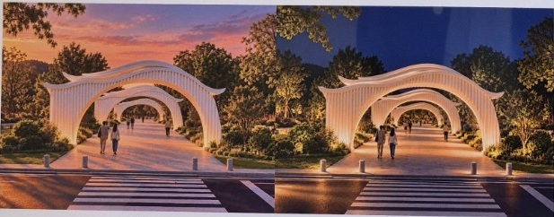
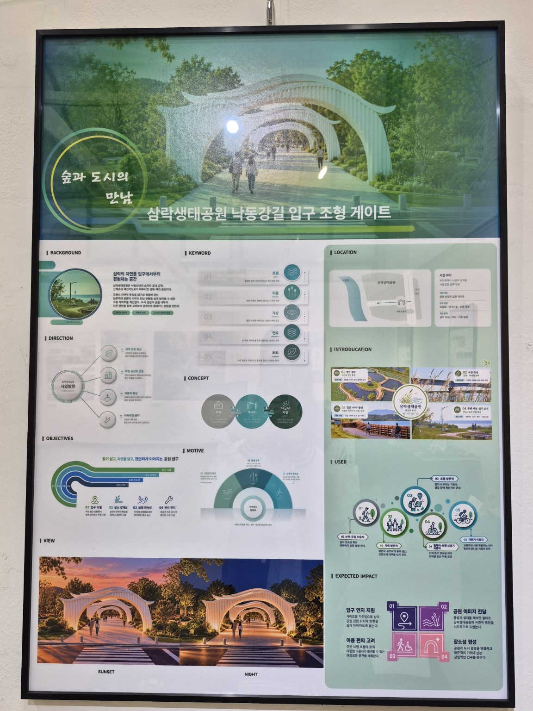

알아보기 쉬운 진입부
연속된 흰색 게이트를 중심 요소로 배치해 방문자가 공원의 입구를 시각적으로 인식하도록 제안합니다.
01 / SPATIAL DESIGN
삼락생태공원 낙동강길 입구 조형 게이트
도시의 길에서 공원의 풍경으로.
물결처럼 이어지는 곡선이 자연으로의 진입을 안내합니다.

전시 모형 전체 모습 — 중앙의 진입 동선과 양측의 녹지·휴게 공간
BACKGROUND & CONCEPT
삼락생태공원에 들어서는 순간부터 자연의 분위기를 느낄 수 있도록 제안한 입구 조형 게이트입니다. 도시에서 이어지는 보행 동선에 상징적인 진입 장면을 만들고, 공원의 자연적 이미지를 전달하고자 했습니다.
낙동강의 흐름을 떠올리게 하는 부드러운 지붕 곡선과 반복되는 수직 요소가 리듬을 만듭니다. 연속된 게이트는 시선을 공원 안쪽으로 이끌고, 열린 중앙부는 보행 공간과 주변 풍경이 이어지도록 구성했습니다.
SPATIAL EXPERIENCE
연속된 흰색 게이트를 중심 요소로 배치해 방문자가 공원의 입구를 시각적으로 인식하도록 제안합니다.
중앙 보행로 양옆으로 녹지와 벤치를 배치해 이동과 머무름이 함께 이루어지는 공간을 구성했습니다.
패널의 주간·석양·야간 이미지를 통해 주변 자연과 빛에 따라 달라지는 게이트의 분위기를 보여줍니다.

PROJECT BOARD
배경, 디자인 방향, 키워드, 콘셉트, 위치와 이용자, 기대 효과를 정리한 작품 패널입니다. 실제 전시 사진을 통해 전체 구성을 확인할 수 있습니다.
사진 속 작은 글씨는 촬영 해상도와 빛 반사로 일부 읽기 어려울 수 있습니다.
패널 원본 크게 보기 ↗